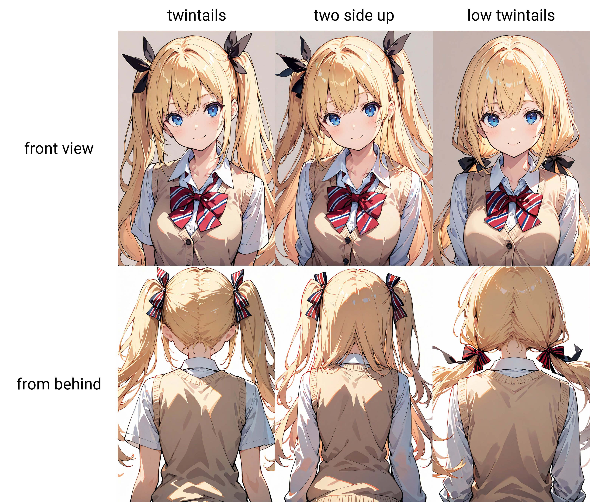
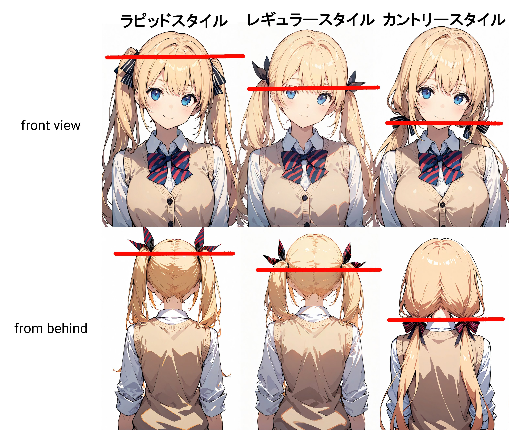
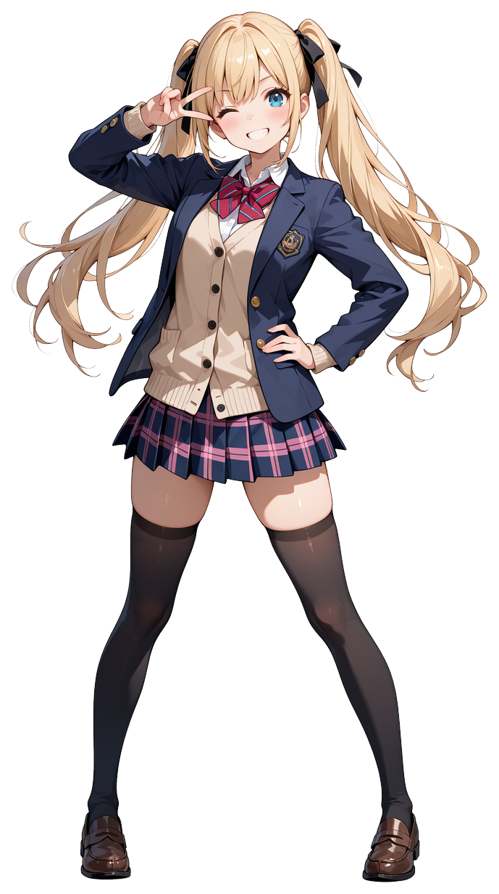
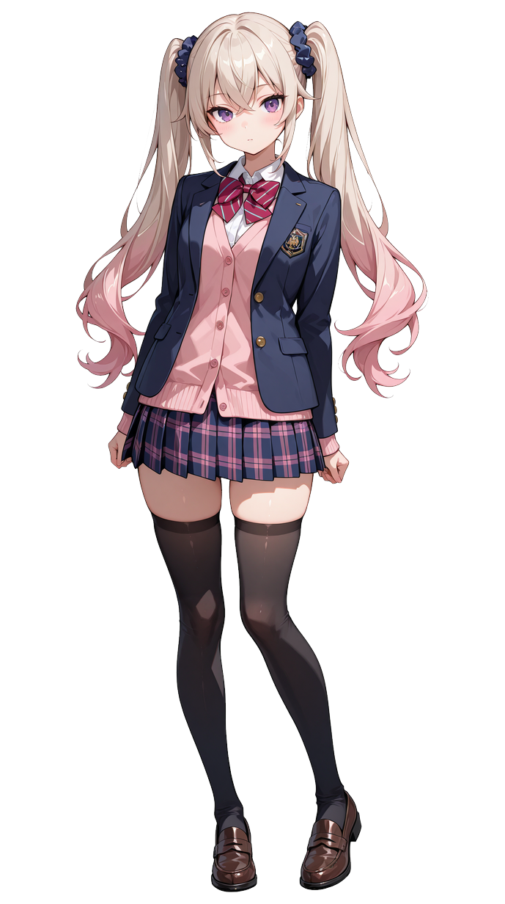
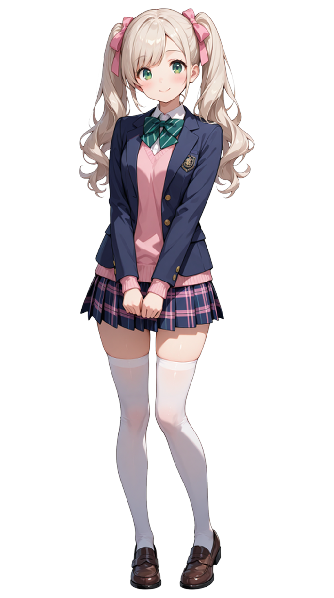

こんばんツインテール ζ(＾ω＾)ζ 自称ツインテール普及委員会、ぼくナオえもんですっ♪
今日は全力と偏愛をこめて、ツインテールについて真面目に考察してみた。 少しだけ長いかもしれないがよかったら話に付き合ってくれ。

■1. はじめに
ツインテール――それはもはや単なる髪型の一種ではない。 それは感情であり、思想であり、信仰であり、時としてアイデンティティの象徴でもある。 左右に揺れる二本の束は、言葉を使わずしてキャラクターの「個性」や「立ち位置」を語り、画面の中に存在感を刻み込む。
アニメやゲーム、イラストといったビジュアル文化において、ツインテールは常に特別な意味を持ってきた。 「元気」「可愛さ」「強さ」「純粋さ」――それらを内包しつつ、視覚的な記号としても非常に強力である。
しかし、なぜツインテールだけがここまで突出した魅力を放つのか？ なぜ我々は、ツインテールを見るたびに心を奪われ、創作においてもこの髪型を“特別”と感じてしまうのか？
本稿では、ツインテールの視覚構造・キャラ演出上の機能・類似スタイルとの差異・そして我々が本能的に感じる魅力について、多角的に、そして少し熱く掘り下げていく。
■2. ツインテール、ツーサイドアップ、おさげについて
まずはツインテールとよく似た三つのスタイルを整理しておこう。 これらは見た目が近いため混同されがちだが、キャラに与える印象や語る“性格”が全く違うのがポイントだ。
●ツインテール 髪を左右対称に、主に後頭部〜側頭部で2束に分けて結んだスタイル。 一見シンプルに見えるが、結び位置の高さ・束の太さ・毛先の動きで驚くほど多様な個性を演出できる。 その純粋さと分かりやすさが、キャラクター記号としての完成度を高めている。
●ツーサイドアップ 髪の上部（こめかみ〜耳上）だけを左右で結び、残りの髪は下ろすスタイル。 いわばポニーテールとダウンヘアのハイブリッド。 元気さと大人っぽさが共存し、少女的でありながら洗練された印象を持たせる。 甘さの中に理性がある――そんな雰囲気を演出したいときに用いられる。
●おさげ（low twintails） 耳よりも下、首元近くで結ぶ左右二束の髪型。 素朴さ・幼さ・郷愁といったイメージを喚起させる。どこか昭和的な優しさを漂わせる。 カントリースタイルとして描写されることも。
見た目は似ているが、視線の誘導・印象操作・キャラクター設計においては全くの別物であることがわかる。 ツインテールの「ただの左右2束」と思われがちな設計の中には、実に深い意味と戦略が詰まっているのだ。

■3. ツインテールの細かい区分
ツインテールは「2つに結ぶ髪型」という共通項を持ちながら、その位置・長さ・ボリュームの違いで印象が大きく変わる。ここでは、代表的なタイプをいくつか分類してみよう。
●ラピッドスタイル（高めツインテ） → 位置は頭頂〜後頭部の高い場所。代表例：初音ミク 強い非現実感と躍動感を持ち、“アニメ的キャラ”の記号として極めて強力。 スピード感・活発さ・アイドル性の象徴とも言える。AI画像生成でも最も高確率で出現するスタイル。
●レギュラースタイル（耳横・自然系） → 結び目が耳の高さ前後。代表例：中野梓（けいおん！） アニメキャラとしてはやや控えめだが、現実との接点が強く、「真面目系元気」や「常識人属性」と親和性が高い。 自然体でありつつ、可愛さを損なわないバランス型。
●カントリースタイル（というか、おさげｗ） → 首元近くに結んだスタイル。代表例：おさげ髪キャラ全般 昭和的・牧歌的な印象を持ち、内向的・純朴・田舎風情を感じさせる。 特に編み込みやリボンとの組み合わせで、文化的・郷愁的な記号になる。
さらに派生系として：
●ショートツインテール（ピッグテール？ → 肩より短く、太さの少ないスタイル。高町なのはのような髪型が該当。 ただ、肩より短いスタイルを呼ぶという説もアリ。鹿目まどかなどがピッグテールと言われる事もある。 小ぶりで短めの左右ツインは「ピッグテール」と呼ばれることもあるが、その定義はやや曖昧だ。
ちなみに、私の中では「ツインテール」と呼べるのはラピッドスタイルとレギュラースタイルまで。 カントリースタイルは――ただのおさげ、かな。

■4. ツインテールが何故こんなに魅力的なのか！
ツインテールは、なぜここまで視線を惹きつけるのか？ それは「可愛いから」という単純な一言では片付けられない。 この髪型には、視覚的魅力・キャラクター演出・非現実感・文化的記号性など、いくつもの層にまたがる“深み”がある。以下にその代表的な魅力を挙げよう。
●揺れる髪のダイナミズム 左右に分かれた束が「揺れる」――それだけでキャラクターに命が宿ったような臨場感が生まれる。 ツインテールは、動くと最も映える髪型のひとつだ。ジャンプ、ターン、風、戦闘、ダンス…… アニメーション・ゲーム・イラストにおいて、髪の毛の揺れは感情やテンポを伝える装置となる。 その「物理的な動き」が、視覚的リズムと感情的な高揚を生み出している。
●キャラクター性を一瞬で伝える視覚記号 ツインテールは、髪型の中でも最も性格を読み取りやすいスタイルである。 以下はあくまで傾向だが、それだけでキャラ性が視覚的に“語れる”。
高いツインテ → 元気・強気・中二・ヒロイン力高め 中間ツインテ → 常識人・真面目系・芯の強さ 低めツインテ → 内気・優しい・幼い・保守的 長いツインテ → 神秘・幻想的・メルヘン 短いツインテ → 純粋・キュート・年少的
このように、ツインテールはただの髪型ではなく、性格を視覚的に「記号化」できるツールなのだ。 創作の文脈では「性格が顔に出る」のではなく、「性格が髪型に出る」とすら言える。
●アイドル性と主役感 ツインテールは目立つ。とにかく目立つ。 髪のボリュームが左右に展開し、画面上で**「顔の幅を超える存在感」**を出す。 これにより、どんなにキャラ数が多くても、ツインテールは“センター感”を放つ。 彼女たちにツインテールが多いのは偶然ではない。 **「主役たらしめる髪型」**としての説得力が、そこにはある。
●リアルには少ない＝非現実性の記号 現実ではあまり見かけない髪型であることも、ツインテールの“特別感”を際立たせている。 学校や街中で見かけることはまれで、それが逆にアニメ・ゲームなど**「フィクションの中の特権的存在」**としての魅力を強化している。 つまり、ツインテールは「異世界の住人の髪型」であり、見る人に“今ここではない物語”を想起させるのだ。
■5.ツインテール三人娘のキャラ分析
ここまでツインテールには、さまざまな高さやスタイルが存在することを見てきた。 中でも、結び目が高く活発な印象を与える「ラピッドスタイル」は、強いアニメ的魅力と非現実感を持つ、いわばヒロイン属性の象徴だ。
そして我が三人娘――美桜ちゃん、美優ちゃん、ひよりちゃんは、全員がこのラピッドスタイルという珍しい編成！ だが、同じスタイルであっても、その見せ方や放つ空気感は三者三様。それぞれの髪型には、性格や役割との見事な“化学反応”が起きている。

美桜ちゃん
高めの結び目に大きめのリボン、そして金髪のツインテールが画面の中で弾けるように輝く。 まさに王道の元気ヒロイン。 動けば跳ね、叫べば揺れ、笑えば一緒に笑いたくなるような、そんな存在感。 ツインテールがキャラの「動」としての魅力を担っている好例だ。

美優ちゃん
プラチナブロンドと淡いピンクが混ざり合うグラデーションツインテ。 高い結び目はそのままに、洗練された色彩と繊細な質感が、彼女の天才肌らしさを演出している。 感情を多く語らずとも、髪型がすでに彼女の完成度と美しさを物語っているのだ。

ひよりちゃん
柔らかく波打つようなウェーブが印象的な、ふんわり優しいツインテール。 高い位置の結び目でも主張しすぎず、揺れる毛束に癒しと温もりを感じさせる。 彼女にとってツインテールは、元気よりも「包容力」として働いている――そんな不思議な温度がある。
このように、たとえ同じ「高めツインテール」でも、それがキャラクターの個性や存在感をどこまで支えているかを見ていくと、ツインテールという髪型の奥深さがより鮮明に見えてくる。
■6. まとめ
ツインテールはただのヘアスタイルではない。 それは「視覚によってキャラクターを語る」ための記号であり、揺れ・配置・左右性といったデザイン的要素が凝縮された存在だ。
ツーサイドアップやおさげといった類似スタイルと比べても、ツインテールは「可愛さ」「個性」「非現実性」という要素を高いレベルで兼ね備えている。 結び目の高さ、毛束の太さ、長さ、動き――それぞれの要素がキャラクター性を支えるパーツとして機能し、だからこそ我々はそれを「記号」として受け取り、惹かれていく。
そして何より―― ツインテールには、夢がある。 それは「二つに結んだ髪」がなぜか、心をふたつに割って支配するような、そんな不思議な魔力だ。
この髪型に恋をしてしまったあなたも、きっとその魅力にすでに囚われている。 ようこそ、ツインテールの沼へ。